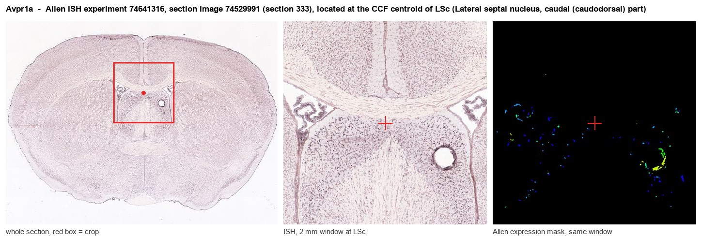
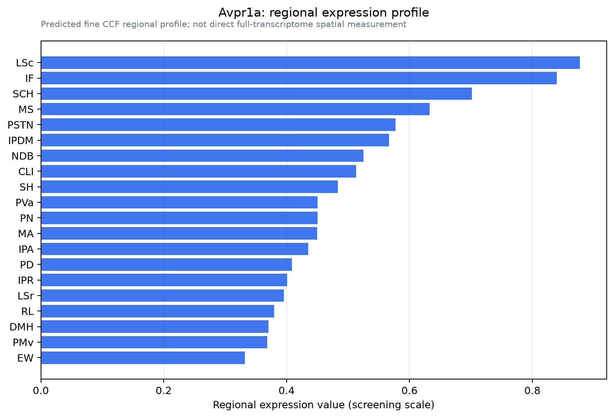

Avpr1a
Vasopressin V1a receptor
Spatial tier: REGION_BIASED · Class: GPCR · Top region: LSc (Lateral septal nucleus, caudal (caudodorsal) part) · Positive regions: 30/554
45.4Discovery Score
38.9Targetability Score
CEvidence grade C
What this means: Avpr1a: fine CCF profile is region-biased toward LSc (top regions: LSc, IF, SCH, MS, PSTN); this is a discovery lead, not direct proof.
Function in LSc: evidence, prediction, innovation
- Gene function
- Avpr1a encodes the V1a vasopressin receptor, a Gq/G11-coupled GPCR activated by arginine vasopressin. Activation stimulates phospholipase C, generating IP3 and diacylglycerol, releasing intracellular calcium and activating PKC. Peripherally it drives vasoconstriction; in brain it is the main receptor through which vasopressin acts on social behaviour, aggression, anxiety and stress coping.
- Region function
- The lateral septum, particularly its caudal/caudodorsal part, is a GABAergic hub relaying hippocampal and hypothalamic input to hypothalamic and midbrain targets, gating social recognition, social play, aggression and anxiety.
- Published in this region
- direct Direct and extensive. Bielsky et al. 2005 showed in a gene-replacement study that AAV re-expression of V1aR in the lateral septum of Avpr1a-null mice fully restored social recognition, while septal overexpression in wild-type mice enhanced it, making septal V1aR necessary and sufficient. Allaman-Exertier et al. 2007 showed vasopressin modulates lateral septal network activity through two distinct electrophysiological mechanisms. Bredewold et al. 2023 showed septal vasopressin regulates social play sex-specifically via glutamate, and Liu et al. 2025 linked the septal AVP/OT system to isolation-induced anxiety and depression.
- Predicted function
- Prediction: within LSc specifically, V1aR most likely sits on GABAergic projection neurons where Gq signalling depolarises them and increases glutamatergic drive, converting hippocampal contextual and social input into hypothalamic output. Cell-type-restricted LSc Avpr1a deletion or local SR49059 should impair social recognition memory and reduce isolation-induced anxiety-like behaviour without altering general locomotion or olfaction.
- Innovation
- ★☆☆☆☆ 1/5 Septal V1a receptor function is one of the best-characterised neuropeptide-receptor-region pairings in social neuroscience.
- Tools
- Avpr1a knockout mice and AAV-Avpr1a gene-replacement vectors (Bielsky et al. 2005); antagonists SR49059 (relcovaptan) and the Manning compound; agonist [Phe2,Orn8]-vasotocin; Avpr1a RNAscope probes and [125I]-linear-vasopressin-antagonist autoradiography; septal access by AAV in Slc32a1 (VGAT)-Cre, Crh-Cre and Esr1-Cre mice.
- References
Direct evidence located at the region

Allen ISH experiment 74641316, section image 74529991 (section 333): the section that contains the CCF centroid of Lateral septal nucleus, caudal (caudodorsal) part according to the Allen image-to-atlas alignment (reference_to_image), with a 2 mm window around that point. Left: whole section, red box = window. Middle: ISH signal. Right: Allen's expression-mask view of the same window. open this image in the Allen viewer
Look it up yourself: Allen Mouse Brain ISH for Avpr1aAllen reference atlas: LSc (structure 250)ABC Atlas MERFISH viewer(in the ABC Atlas choose dataset MERFISH-C57BL6J-638850-CCF, colour cells by gene "Avpr1a" or by parcellation_substructure "LSc")All genes confined to LSc + 3-D brain
Direct spatial evidence
MERFISH REGION LOCATOR

Regional expression figure

Predicted WMB × fine-CCF profile; not direct full-transcriptome spatial measurement.
Spatial profile
Evidence and specificity
- Evidence status
- PREDICTED_FINE
- Direct sources
- None; predicted localization only
- Exclusive threshold
- 12 positive regions out of 554
- Spatial specificity
- 0.333
- Top-region fraction
- 0.050
- Filter status
- PASS
Interpretation limits
- Cell-type-to-region projection is imputed expression, not direct spatial measurement.
- Adult reference atlases do not establish stability across age, sex, strain, state, or disease.
- Transcript abundance does not guarantee protein abundance or genetic-tool performance.